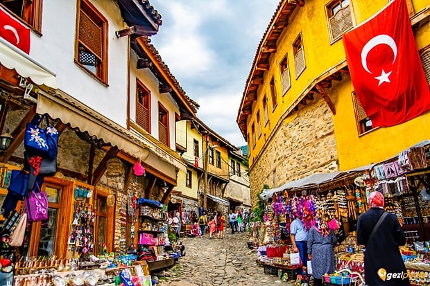
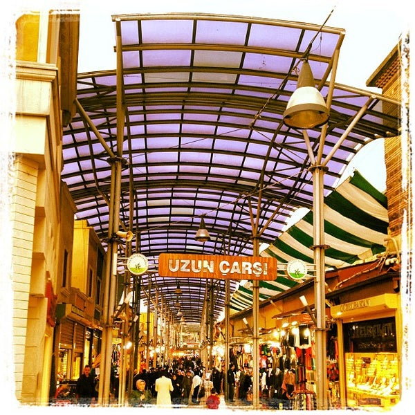

Bursa'nın Ulu Camisi
Bursa Ulu Cami, Bursa’da I. Bayezid tarafından 1396-1400 yılları arasında yaptırılmış ulu cami
Bursaya geldiğinizde ziyaret etmeniz gereken yerlerdendir.
Bursa Tophane
Tophane Saat Kulesi Bursa'da Osmanlı padişahı II. Abdülhamit'in tahta çıkışının 29. yılı şerefine inşa edildiği rivayet edilen tarihî saat kulesi.
Osmanlı dönemi mimarisini yansıtan önemli bir anıtsal eserdir.

Cumalıkızık
Cumalıkızık, Türkiye'nin Bursa ilinin Yıldırım ilçesine bağlı bir mahalledir.
Bursa şehir merkezine 11 kilometredir. Ortalama 20 dakikada ulaşım sağlanır.

Uzun Çarşı
Tarihi bursa eşyalarını hatıralarını bulabileceğiniz bir çarşıdır.